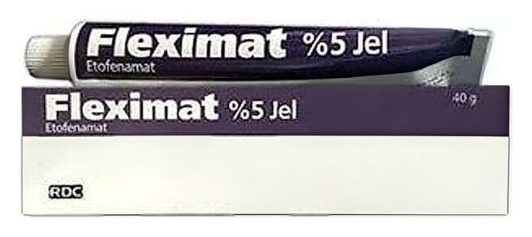

Fleximat %10 Jel 40 g

Ne için kullanılır
KT · Bölüm 1FLEXİMAT *» 10 JEL, 40 g beyaz renkli jel içeren, polipropilen kapaklı alüminyum tüplerde ve karton kutu içerisinde kullanıma sunulmaktadır. FLEXİMAT *» 10 JEL, etkin madde olarak etofenamat içerir. Etofenamat, steroid olmayan (kortizonsuz) anti-romatik (romatizma tedavisi) ilaçlar grubundandır ve iltihap/inflamasyon giderici (anti-inflamatuvar) ve ağrı kesici (analjezik) özelliklere sahiptir. FLEXİMAT *»6 10 JEL, aşağıdaki durumların tedavisinde kullanılır: e Spor yaralanmaları gibi künt travmalardan sonra el ve ayaklardaki akut ezilme, burkulma
ve zorlanmalara bağlı ağrılı durumlar.
e Diz eklemi iltihabi durumlarında, eklem çevresi yumuşak dokulardaki (bursa, tendon, bağlar ve eklem kapsülü) ağrılı durumlar.